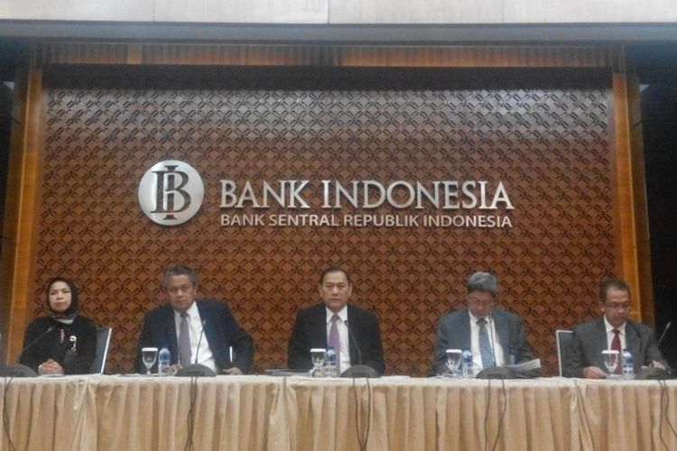

Stimulus Moneter dan BI yang Percaya Diri
MUHAMMAD FAJAR MARTA
KabarKabur.com - 27/09/2017, 12:39 WIB

Dewan Gubernur Bank Indonesia
Bank Indonesia (BI) mengejutkan banyak pihak usai Rapat Dewan Gubernur BI pada Jumat (22/9) memutuskan memangkas suku bunga acuan BI 7-day (reverse) Repo Rate (BI 7-day RR) sebesar 25 basis poin (bps) menjadi 4,25 persen.
Ini merupakan pemangkasan yang kedua secara berturut-turut setelah pada bulan sebelumnya (Agustus 2017), BI juga menurunkan BI 7-day RR sebanyak 25 bps menjadi 4,5 persen.
Langkah bank sentral tersebut dianggap mengejutkan karena tak sesuai dengan ekspektasi pasar yang memprediksi suku bunga acuan akan bertahan di level 4,5 persen.
Pasar menilai penurunan suku bunga acuan yang agresif akan meningkatkan risiko pada pasar keuangan Indonesia.
Pasalnya, pemangkasan justru dilakukan BI di tengah meningkatnya kemungkinan naiknya suku bunga acuan di AS dan Eropa, yang memiliki pengaruh besar terhadap pasar keuangan global.
Kondisi ini berpotensi memperkecil spread suku bunga antara Indonesia dengan negara-negara maju yang berarti akan mengurangi daya tarik investor global untuk menanamkan modalnya pada instrumen-instrumen keuangan Indonesia.
Investor kemungkinan juga akan melepas aset-asetnya dalam rupiah dan mengalihkannya ke instrumen-instrumen negara lain yang lebih menarik.
Ini tentu bakal berdampak pada pelemahan nilai tukar rupiah. Rupiah yang saat ini sudah murah (undervalued) akan semakin murah sehingga fundamental perekonomian terlihat rapuh.
Langkah BI kembali memangkas suku bunga acuan juga dinilai aneh mengingat pada triwulan III 2017, konsumsi masyarakat sebenarnya mulai meningkat.
Penjualan eceran pada Agustus 2017 dilaporkan tumbuh 5,8 persen secara tahunan (year on year/yoy) setelah turun 3,3 persen (yoy) pada bulan sebelumnya.
Penjualan otomatif juga membaik tercermin dari penjualan motor dan mobil yang tumbuh positif pada Agustus 2017.
Sementara itu, realisasi ekspor nonmigas riil pada Agustus 2017 tumbuh 8,04 persen (yoy) seiring tingginya harga komoditas ekspor primadona Indonesia seperti batu bara dan tembaga.
Inflasi rendah
Dengan berbagai risiko tersebut, lantas apa yang membuat BI begitu percaya diri untuk kembali memangkas suku bunga acuan?
Kondisi eksternal memang menjadi pertimbangan BI dalam menentukan suku bunga acuan. Namun, pertimbangan utama tetaplah faktor domestik, terutama inflasi.
BI menggunakan suku bunga acuan untuk mengarahkan inflasi agar sesuai dengan koridor target yang ditetapkan.
Secara sederhana, jika inflasi berada di bawah koridor target, maka BI akan menurunkan suku bunga acuan atau BI 7-day RR. Jika inflasi berada di atas koridor target, maka bank sentral akan menaikkan BI 7-day RR.
Inflasi sendiri merupakan fenomena kenaikan harga barang akibat tidak seimbangnya permintaan dan penawaran.
Jika permintaan tinggi, namun pasokannya tidak mencukupi, maka harga akan naik sehingga terjadi inflasi. Sebaliknya, jika pasokan lebih besar dari permintaan, maka harga akan turun sehingga terjadi deflasi.
Jika inflasi tidak terkendali atau di luar dari koridor target yang ditentukan, maka perekonomian menjadi tidak stabil atau tidak sesuai dengan yang diharapkan.
Tahun 2017, bank sentral menargetkan inflasi sebesar 4 persen plus minus satu persen. Hingga Agustus 2017, inflasi yoy sebesar 3,82 persen atau berada di bawah titik tengah target.
Inflasi yoy turun terus sejak Juni 2017, dari 4,37 persen menjadi 3,88 persen pada Juli 2017 dan kemudian 3,82 persen.
Inflasi yang rendah belum tentu bagus, apalagi jika levelnya di bawah target yang telah ditetapkan.
Inflasi yang lebih rendah dari target mengindikasikan tingkat permintaan domestik masih di bawah level yang dibutuhkan untuk mendorong pertumbuhan ekonomi yang tahun ini ditargetkan sebesar 5,2 persen.
Menurunnya permintaan domestik lebih jelas terlihat pada angka inflasi inti. Sebab, inflasi inti lebih mencerminkan kondisi permintaan dan penawaran yang sebenarnya.
Inflasi inti tidak termasuk harga-harga makanan pokok yang cenderung fluktuatif (volatile food) dan harga komoditas yang dikendalikan pemerintah seperti bahan bakar minyak (administered price).
Berdasarkan data BPS, inflasi inti yoy terus menurun sejak Maret 2017 hingga berada di level 2,98 persen pada Agustus 2017, yang merupakan inflasi inti yoy terendah selama era reformasi.
Untuk mendorong permintaan domestik, kebijakan moneter harus dilonggarkan, salah satunya dengan menurunkan suku bunga acuan.
Dengan turunnya suku bunga acuan, maka seluruh suku bunga instrumen dalam rupiah juga akan turun akan termasuk suku bunga kredit.
Penurunan suku bunga pada gilirannya akan meningkatkan permintaan kredit sehingga perekonomian pun menjadi lebih bergairah.
Karena melihat inflasi inti yang terus menurun itulah, BI akhirnya memangkas BI 7-day RR sebesar 25 bps menjadi 4,5 persen pada pertengahan Agustus 2017.
Meskipun suku bunga acuan telah dipangkas, permintaan domestik ternyata masih lemah, terindikasi dari inflasi inti yoy Agustus 2017 yang kembali turun ke posisi 2,98 persen.
Kondisi itu menandakan bahwa pemangkasan suku bunga acuan sebesar 25 bps belumlah cukup. Inflasi inti yoy sendiri sudah turun sekitar 43 bps sejak Maret 2017.
Percaya diri
BI tentu mengetahui ada potensi risiko yang harus dihadapi bila pemangkasan suku bunga acuan kembali dilakukan.
Risiko tersebut, seperti yang dikhawatirkan pasar, adalah melemahnya nilai tukar rupiah akibat larinya dana asing dari Indonesia.
Namun di sisi lain, stimulus moneter berupa penurunan suku bunga acuan harus dilakukan untuk mendorong pertumbuhan ekonomi.
Sebab, pertumbuhan ekonomi hingga triwulan II 2017 baru mencapai 5,01 persen, atau masih di bawah target sebesar 5,2 persen.
Stimulus moneter juga diperlukan untuk menghela intermediasi perbankan. Hingga kini, intermediasi perbankan belum juga membaik.
Pertumbuhan kredit Juli 2017 masih rendah yaitu tercatat 8,2 persen (yoy), meskipun membaik dari bulan sebelumnya yang sebesar 7,8 persen (yoy).
Pertumbuhan kredit yang tinggi hanya terjadi pada sektor konstruksi, listrik, jasa dan pertanian, sedangkan sektor-sektor lain masih tumbuh rendah.
Dengan alasan-alasan tersebut, BI pun memutuskan untuk kembali memangkas suku bunga acuan sebesar 25 bps menjadi 4,25 persen pada 22 September 2017.
Ini merupakan level terendah suku bunga acuan sejak BI menggunakan kebijakan inflation targeting framework pada 2005.
BI percaya diri menurunkan suku bunga acuan karena sejumlah indikator seperti neraca pembayaran, perkembangan nilai tukar rupiah, cadangan devisa masih positif sehingga dinilai cukup kuat untuk meredam potensi gejolak yang ada.
BI juga menilai risiko eksternal terutama yang terkait dengan rencana kebijakan Fed Funds Rate (FFR) dan normalisasi neraca bank sentral AS juga telah diperhitungkan pasar sehingga tidak akan menimbulkan gejolak yang berarti.
Hingga kini dana asing masih terus mengalir ke pasar keuangan Indonesia karena imbal hasil yang menarik dan prospek perekonomian yang bagus. Aliran masuk modal asing ke pasar keuangan Indonesia telah mencapai 9,17 miliar dolar AS sampai akhir Agustus 2017.
Perbaikan sektor eksternal tersebut ikut memberikan kontribusi pada kenaikan cadangan devisa sehingga pada akhir Agustus 2017 mencapai 128,8 miliar dolar AS atau cukup untuk membiayai 8,9 bulan impor atau 8,6 bulan impor dan pembayaran utang luar negeri pemerintah, serta berada di atas standar kecukupan internasional sekitar 3 bulan impor.
Rupiah juga bergerak stabil dan cenderung terapresiasi. Selama Agustus 2017, secara rata-rata rupiah menguat sebesar 0,02 persen menjadi Rp13.343 per dolar AS. Penguatan tersebut dipengaruhi oleh pelemahan dolar AS dan aliran masuk dana asing yang menyebabkan kondisi net supply di pasar valas.
Di sisi lain, volatilitas nilai tukar rupiah tetap terjaga dan lebih rendah dibandingkan negara-negara peers.
Reaksi pasar
Menarik untuk mencermati bagaimana reaksi pasar atas langkah BI yang dianggap mengejutkan ini. Sejauh ini Indeks Harga Saham Gabungan (IHSG) di Bursa Efek Indonesia (BEI) dan nilai tukar rupiah masih berfluktuasi normal meskipun ada kecenderungan melemah paska pemangkasan suku bunga acuan.
Pada perdagangan Selasa (26/9), IHSG ditutup di posisi 5.857, turun 54 poin dibandingkan penutupan Jumat (22/9).
Nilai tukar rupiah berdasarkan Kurs Jakarta Interbank Spot Dollar Rate (Jisdor) di awal pekan ini juga cenderung melemah dan Rabu (27/9) siang ini bertengger di level Rp 13.384 per dollar AS
Kendati demikian, strategi BI yang lebih mementingkan pertumbuhan ekonomi di atas stabilitas keuangan patut diapreasi. Pemangkasan suku bunga acuan yang agresif akan memaksa perbankan menurunkan suku bunga kreditnya secara signifikan.
Bila suku bunga kredit terus turun hingga akhirnya menyentuh level satu digit, maka sektor rill akan terpacu untuk melakukan ekspansi sehingga pertumbuhan ekonomi dapat terakselerasi.
Editor : Muhammad Fajar Marta